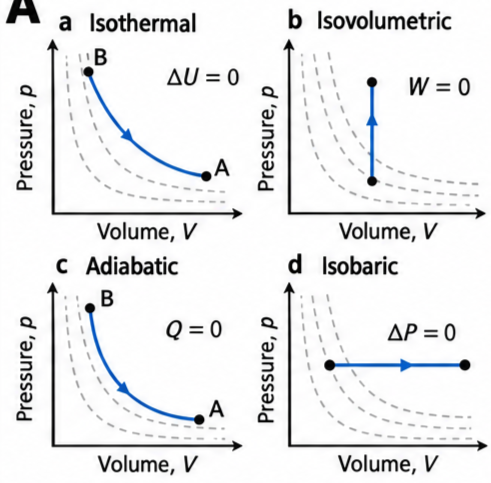
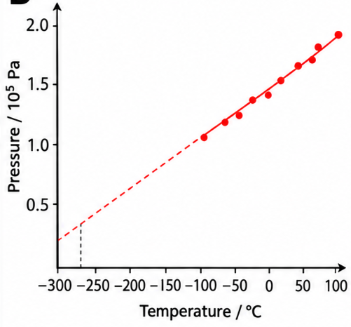
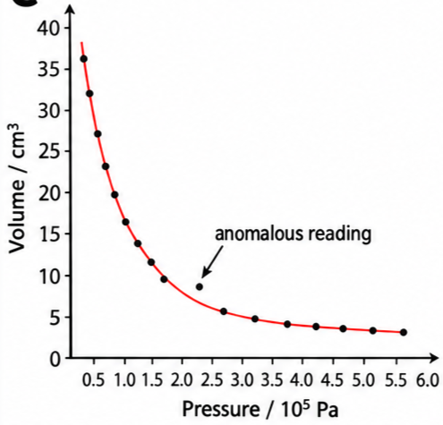
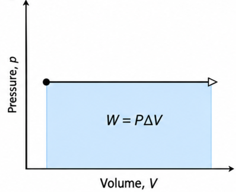
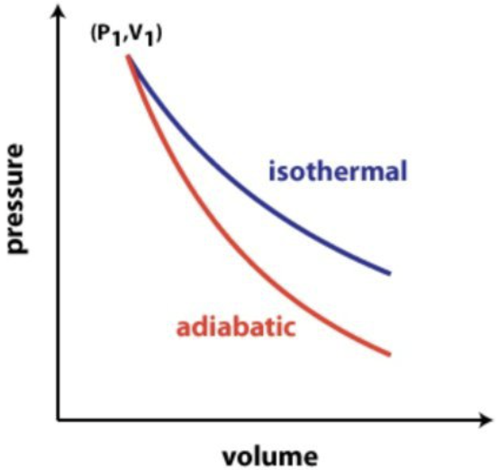
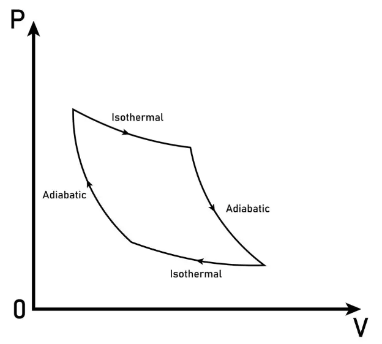

🚲 Hook – why a bicycle pump gets hot
Pump up a bicycle tyre quickly and the barrel of the pump gets noticeably warm — even though you haven't heated it with anything. You've compressed the air inside faster than heat can escape through the pump's metal walls, so essentially no thermal energy crosses the boundary. All the work you do on the trapped air goes straight into its internal energy, and its temperature rises. This is an adiabatic process — one of four "extreme" ways a gas can change state.

🔀 Four extremes of the first law
The first law, \(Q = \Delta U + W\), relates three quantities of energy transfer. Among all the changes of state a gas might undergo, it is convenient to consider four extreme cases, each obtained by keeping one variable fixed:
(The prefix iso- means equal.) Figure B4.10 shows all four on pressure–volume (\(P\)–\(V\)) diagrams, in which the dotted lines are always isothermals — curves of constant temperature.
🌡️ Isothermal (ΔU = 0) and isovolumetric (W = 0)
In an isothermal change the gas's temperature is constant, so its internal energy cannot change: \(\Delta U = 0\). The first law then reduces to:
In an isothermal expansion (B → A on Fig B4.10a), all the work done by the gas on the surroundings is supplied by thermal energy transferred into the gas. In an isothermal compression (A → B), the work done on the gas is all transferred away as thermal energy. For a real process to approximate this ideal, the change must be as slow as possible, giving heat time to flow in or out and keep the temperature constant. Isothermal changes obey Boyle's law: \(PV = \text{constant}\).
Isovolumetric: occurring at constant volume. Since the gas can't change volume, it can do no work and none is done on it: \(W = 0\). The first law reduces to:
If thermal energy is transferred into the gas, it simply gains internal energy and its temperature rises. If thermal energy is transferred away, its internal energy and temperature fall.
🧊 Adiabatic (Q = 0) and isobaric (ΔP = 0)
Adiabatic: occurring without thermal energy being transferred into or out of a closed system, so \(Q = 0\). The first law reduces to:
In an adiabatic expansion (B → A), all the work done by the gas is drawn from its own internal energy — \(\Delta U\) is negative and the temperature falls. In an adiabatic compression (A → B), all the work done on the gas is transferred to its internal energy, and it gets hotter. Microscopically: gas molecules hitting an inward-moving piston gain kinetic energy (compression heats the gas); molecules hitting an outward-moving piston lose kinetic energy (expansion cools it). For a real process to approximate the adiabatic ideal, the change must be as rapid as possible in a well-insulated container.
Adiabatic lines on a \(PV\) diagram must be steeper than isothermal lines, because in equal expansions the temperature falls during an adiabatic change but stays constant during an isothermal one. This can be quantified: an isothermal change obeys \(PV = \text{constant}\) (that is, \(PV^1 = \text{constant}\)), but an adiabatic change of an ideal monatomic gas obeys:
Similar volume changes are therefore associated with bigger pressure changes during adiabatic processes, because there are also accompanying temperature changes. (For gases other than ideal monatomic gases, \(V\) is raised to a different power — not covered in this course.)
Isobaric: any expansion or compression at constant pressure, \(\Delta P = 0\). The first law keeps its full form:
Most isobaric changes happen when a gas is allowed to expand or contract freely as its temperature changes, keeping its pressure equal to the surrounding pressure.
📈 Reading the four processes off a PV diagram
| Process | Line shape | What's fixed | What to read |
|---|---|---|---|
| Isothermal | Curve following a dotted isothermal | Temperature (\(\Delta U=0\)) | \(PV\) stays constant along the curve |
| Isovolumetric | Vertical straight line | Volume (\(W=0\)) | No area beneath the line — zero work done |
| Adiabatic | Curve steeper than the isothermals | Heat transfer (\(Q=0\)) | Steeper fall in \(P\) for the same \(\Delta V\) than an isothermal |
| Isobaric | Horizontal straight line | Pressure (\(\Delta P=0\)) | Area beneath = rectangle = \(P\Delta V\) |
Real experimental graphs are read the same way. Figure B4.11 shows a student's isovolumetric experiment used to estimate absolute zero, and Figure B4.12 shows a Boyle's law (isothermal) experiment with an anomalous reading.


✍️ Worked example B4.5 – an isobaric expansion
A gas of volume 0.080 m³ and pressure \(1.4\times10^{5}\) Pa expands to a volume of 0.11 m³ at constant pressure when \(7.4\times10^{3}\) J of thermal energy are supplied. Name the process, and find the work done and the change in internal energy.
\(W = (1.4\times10^{5})(0.11-0.080)\)

✍️ Worked example B4.6 – an adiabatic compression
The volume of an ideal monatomic gas is reduced by a factor of 8.0 in an adiabatic compression. Determine the factor by which its pressure changes.
\(\dfrac{P_2}{P_1} = \left(\dfrac{V_1}{V_2}\right)^{5/3} = 8.0^{5/3}\)

🌍 Real-world: writing up your investigation
Every investigation report should summarize what a chart, diagram or graph shows: the quantity and spread of measurements, the quality and reliability of the graph, any relationship between the variables, and the meaning of intercepts, gradients, areas under the graph, and any turning points. Figure B4.11 uses an intercept to estimate absolute zero; Figure B4.12 uses departure from a smooth curve to flag an anomaly.
🚀 HL extension – linking PV^(5/3) to temperature
Combining \(PV^{5/3} = \text{constant}\) with the ideal gas law \(PV = nRT\) (so \(P = nRT/V\)) gives another useful adiabatic relation: substituting for \(P\) shows \(TV^{2/3} = \text{constant}\) along an adiabatic change.
Challenge: a monatomic ideal gas expands adiabatically from \(3.13\times10^{-3}\) m³ to \(3.97\times10^{-3}\) m³, reaching a final temperature of 398 K. What was its starting temperature? (Answer: using \(T_1V_1^{2/3}=T_2V_2^{2/3}\), \(T_1 = 398\times(3.97/3.13)^{2/3} \approx 466\) K — hotter, since the gas cools as it expands.)
⚠️ Trap corner – common mistakes
| Misconception | Correct view |
|---|---|
| Isobaric means no work is done | Isobaric means constant pressure, not constant volume — the gas can still expand or contract, and \(W=P\Delta V\) is not zero |
| Adiabatic means the temperature stays constant | That's isothermal (\(\Delta U=0\)). Adiabatic means \(Q=0\); the temperature does change, because all the work is converted to or from internal energy |
| Isothermal and adiabatic lines look the same on a PV diagram | Adiabatic lines are always steeper, because temperature also changes along them, giving a bigger pressure change for the same volume change |
| An anomalous reading should always be deleted | Check it first — most anomalies are simple measurement errors, but a confirmed one should be kept and investigated further |
Complete the statements:

✓ (a)(ii) DA is a vertical line at constant volume — an isovolumetric change.
✓ (b) CD is adiabatic and the gas expands (volume increases from C to D), so \(-\Delta U = W\): the gas does work using its own internal energy, so its temperature falls — \(T_D < T_C\).
✓ (c) AB is isothermal, so by definition the temperature is constant along it — \(T_A = T_B\).
| Process | Q | ΔU | W | ΔP | ΔV | ΔT |
|---|---|---|---|---|---|---|
| isothermal expansion | ? | ? | ? | ? | ? | ? |
| isothermal compression | ? | ? | ? | ? | ? | ? |
| adiabatic expansion | ? | ? | ? | ? | ? | ? |
| adiabatic compression | ? | ? | ? | ? | ? | ? |
| isobaric expansion | ? | ? | ? | ? | ? | ? |
| isobaric compression | ? | ? | ? | ? | ? | ? |
| isovolumetric pressure increase | ? | ? | ? | ? | ? | ? |
| isovolumetric pressure decrease | ? | ? | ? | ? | ? | ? |
| Process | Q | ΔU | W | ΔP | ΔV | ΔT |
|---|---|---|---|---|---|---|
| isothermal expansion | + | 0 | + | − | + | 0 |
| isothermal compression | − | 0 | − | + | − | 0 |
| adiabatic expansion | 0 | − | + | − | + | − |
| adiabatic compression | 0 | + | − | + | − | + |
| isobaric expansion | + | + | + | 0 | + | + |
| isobaric compression | − | − | − | 0 | − | − |
| isovolumetric pressure increase | + | + | 0 | + | 0 | + |
| isovolumetric pressure decrease | − | − | 0 | − | 0 | − |
✓ \(P_2 \approx 1.75\times10^{5}\ \text{Pa}\).
✓ (b) Combining \(PV^{5/3}=\text{const}\) with \(PV=nRT\) gives \(TV^{2/3}=\text{const}\): \(T_1 = T_2(V_2/V_1)^{2/3} = 398\times(3.97/3.13)^{2/3}\)
✓ \(T_1 \approx 466\ \text{K}\) — hotter than the final state, consistent with cooling on adiabatic expansion.